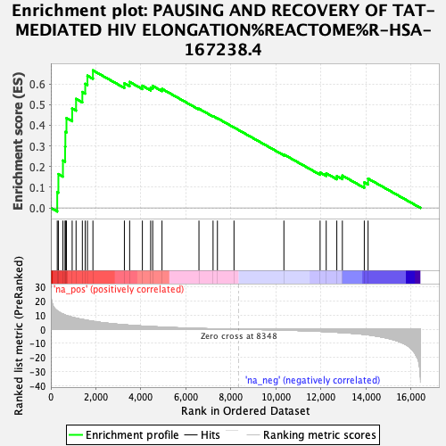
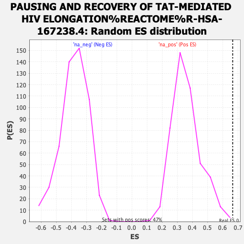

| Dataset | ranked_gene_list |
| Phenotype | NoPhenotypeAvailable |
| Upregulated in class | na_pos |
| GeneSet | PAUSING AND RECOVERY OF TAT-MEDIATED HIV ELONGATION%REACTOME%R-HSA-167238.4 |
| Enrichment Score (ES) | 0.66557044 |
| Normalized Enrichment Score (NES) | 1.8397287 |
| Nominal p-value | 0.004282655 |
| FDR q-value | 0.07334736 |
| FWER p-Value | 0.67 |

| SYMBOL | RANK IN GENE LIST | RANK METRIC SCORE | RUNNING ES | CORE ENRICHMENT | |
|---|---|---|---|---|---|
| 1 | POLR2J | 284 | 13.028 | 0.0768 | Yes |
| 2 | POLR2H | 335 | 12.450 | 0.1637 | Yes |
| 3 | ELOB | 537 | 10.767 | 0.2293 | Yes |
| 4 | POLR2L | 633 | 10.063 | 0.2962 | Yes |
| 5 | POLR2E | 645 | 9.970 | 0.3676 | Yes |
| 6 | ELL | 694 | 9.729 | 0.4350 | Yes |
| 7 | NELFA | 947 | 8.541 | 0.4813 | Yes |
| 8 | POLR2D | 1120 | 7.856 | 0.5276 | Yes |
| 9 | POLR2G | 1399 | 6.982 | 0.5611 | Yes |
| 10 | POLR2C | 1527 | 6.545 | 0.6006 | Yes |
| 11 | POLR2I | 1625 | 6.258 | 0.6399 | Yes |
| 12 | NELFE | 1869 | 5.604 | 0.6656 | Yes |
| 13 | POLR2A | 3266 | 3.132 | 0.6030 | No |
| 14 | NELFCD | 3500 | 2.874 | 0.6095 | No |
| 15 | SSRP1 | 4065 | 2.242 | 0.5913 | No |
| 16 | NELFB | 4433 | 1.894 | 0.5826 | No |
| 17 | POLR2K | 4524 | 1.831 | 0.5904 | No |
| 18 | CCNT1 | 4937 | 1.502 | 0.5761 | No |
| 19 | CTDP1 | 6578 | 0.558 | 0.4800 | No |
| 20 | GTF2F2 | 7204 | 0.298 | 0.4440 | No |
| 21 | POLR2F | 7398 | 0.237 | 0.4339 | No |
| 22 | TCEA1 | 8134 | 0.045 | 0.3894 | No |
| 23 | SUPT5H | 10351 | -0.609 | 0.2586 | No |
| 24 | GTF2F1 | 11958 | -1.510 | 0.1714 | No |
| 25 | ELOC | 12230 | -1.719 | 0.1673 | No |
| 26 | POLR2B | 12700 | -2.141 | 0.1542 | No |
| 27 | CDK9 | 12947 | -2.377 | 0.1563 | No |
| 28 | ELOA | 13921 | -3.652 | 0.1233 | No |
| 29 | SUPT16H | 14089 | -3.962 | 0.1418 | No |
